01
Тёплые листья
Бежево-коричневые ветки на фактурном креме. Самый тёплый вариант.
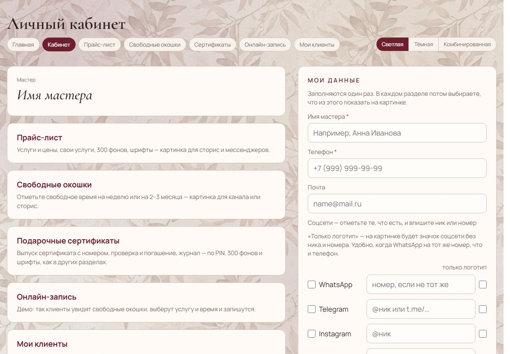
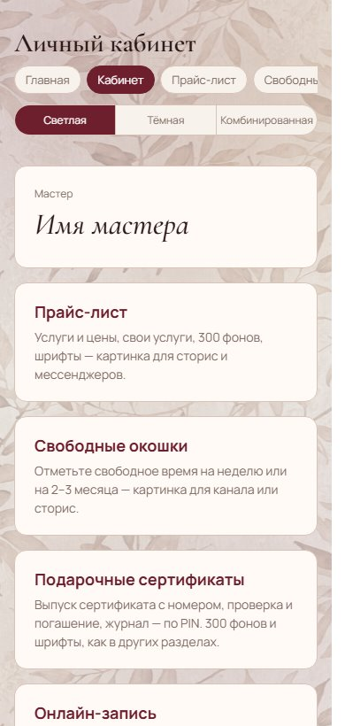
02
Серо-бежевый сад
Спокойные серо-бежевые листья. Мягкий, почти нейтральный фон.
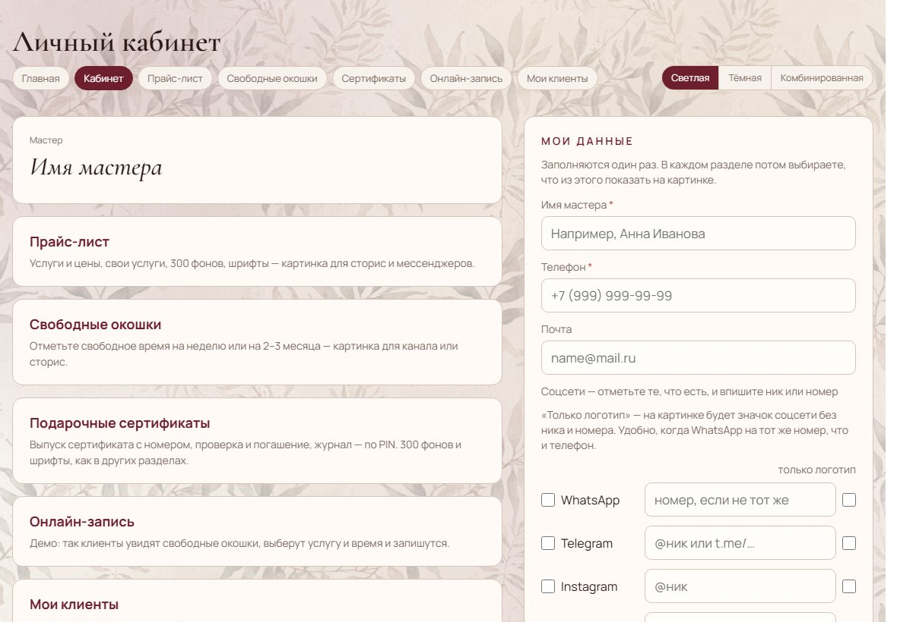
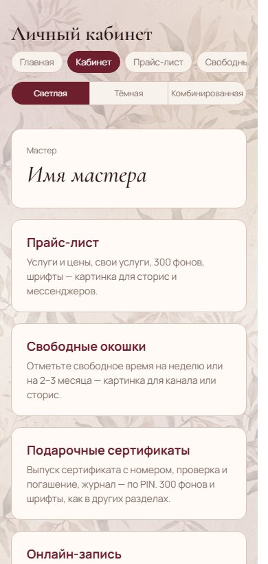
03
Воздушные ветки
Очень светлый разреженный узор. Почти бумага, не мешает тексту.
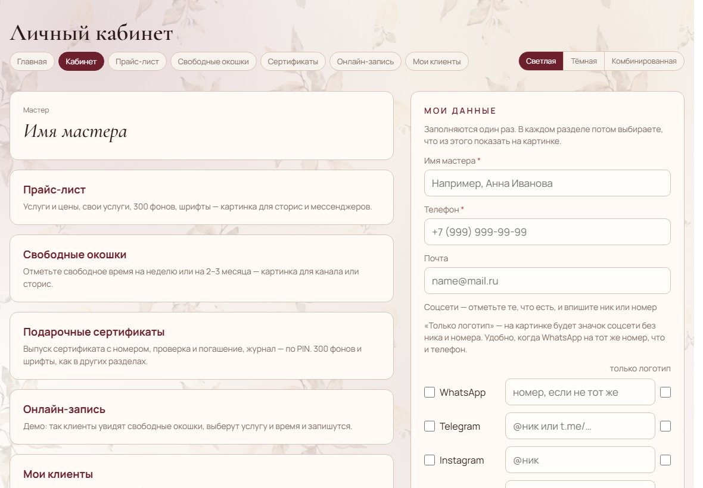
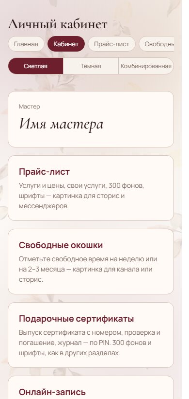
04
Бежевая акварель
Акварельные ветки с бежевым и серым. Плотнее и заметнее остальных.
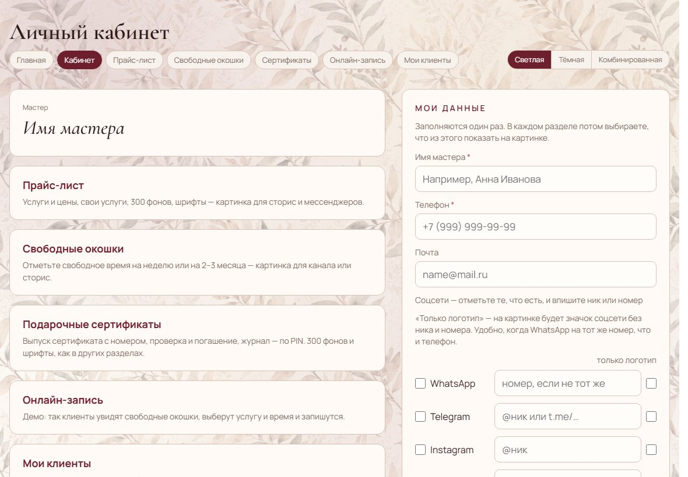
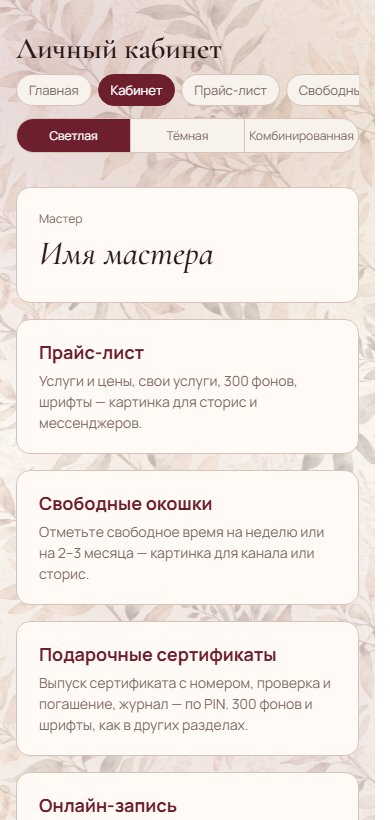
05
Шалфей на кремовом
Крупные шалфейные ветки. Вертикальный рисунок, много воздуха.
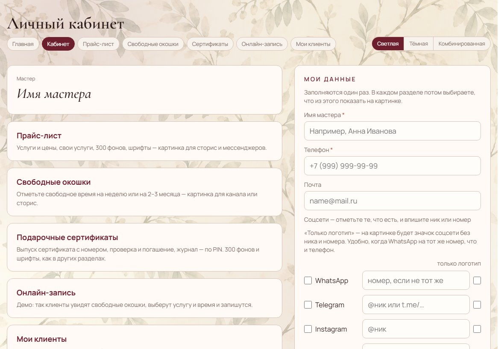
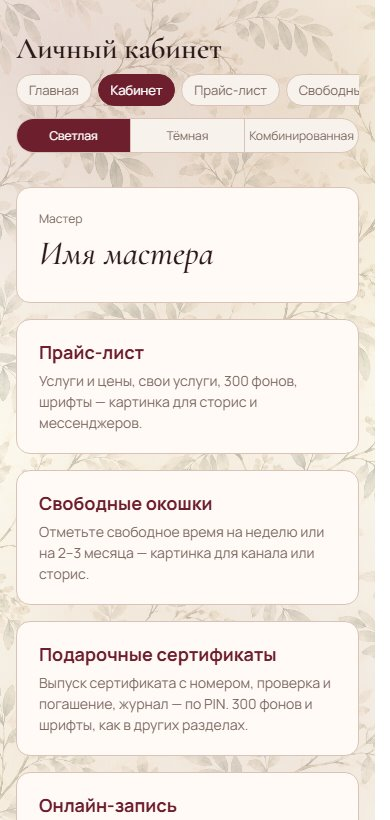
06
Розово-серые листья
Пыльно-розовые и серые листья. Самый декоративный вариант.
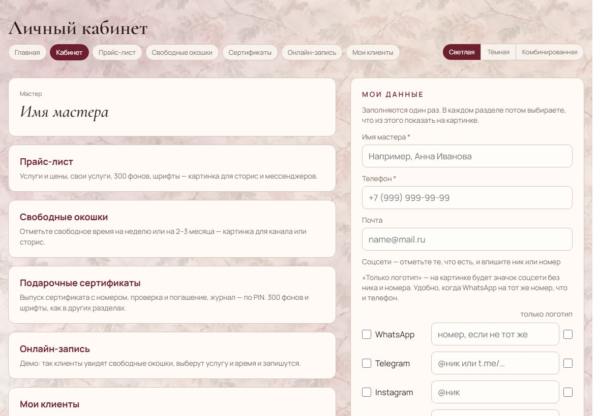
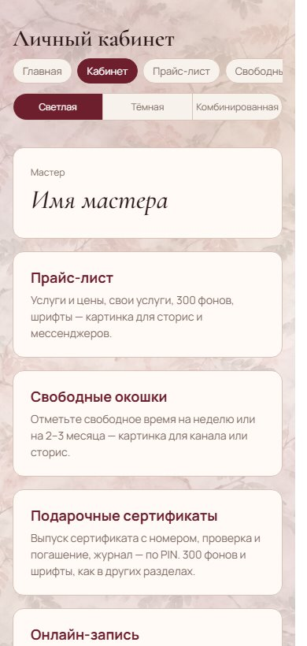